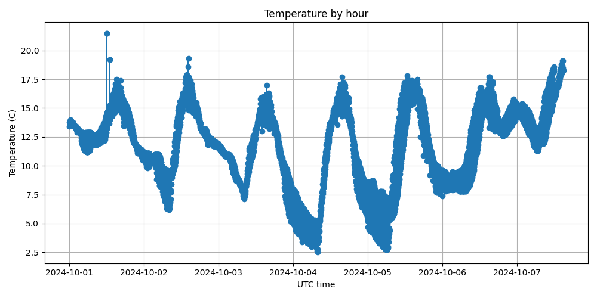

Industrialisation d'un pipeline de migration
Implementation: Docker Compose orchestration with a migration container automating restore, visualization, and tests
Business value: standardized, repeatable execution without complex manual steps
Migrate and industrialize weather data into MongoDB Time Series with automated testing, Docker replica set, and cloud deployment readiness.

Implementation: Docker Compose orchestration with a migration container automating restore, visualization, and tests
Business value: standardized, repeatable execution without complex manual steps
Implementation: replica set initialization, user creation, secondary read checks, and replication state validation
Business value: improved availability and resilience of the data layer
Implementation: integrity tests and automated CRUD scenarios after restore
Business value: reduced risk of post-migration corruption/inconsistency
Implementation: system-flow documentation, EC2/ECR deployment procedure, and CloudWatch monitoring
Business value: clear path to an observable production rollout
Implementation: time-series structuring and temperature-visualization generation
Business value: better data readability for business use and monitoring
Migrate and industrialize weather data into MongoDB Time Series with automated testing, Docker replica set, and cloud deployment readiness.
Restore-and-validate pipeline, replicated MongoDB cluster, Docker Compose orchestration, CRUD/replication tests, and architecture/deployment documentation.